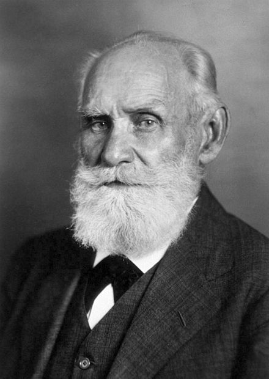
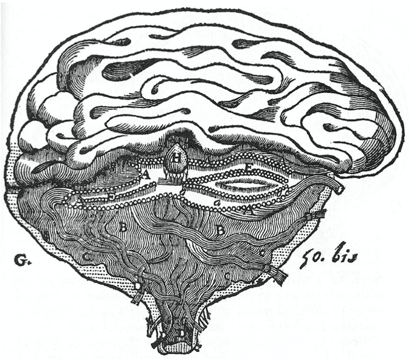
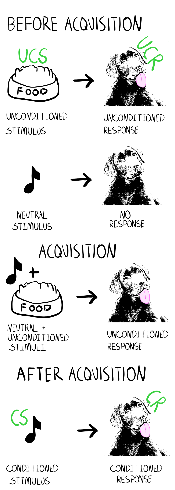

PSYC 2530: Associations
From philosophy to early animal cognition
Matthew J. C. Crump
Last compiled 03/29/22
Reminders
Reading is chapter 5 on Associations from the textbook.
This is part I of II mini-lectures on Associationism
Roadmap
1 Philosophy and Associationism
2 Cattell’s Associations
3 Thorndike’s Puzzle Boxes
4 Pavlov’s Classical Conditioning
Precursors to Experimental Psychology
- Philosophy and Associationism
- Natural Science
- Evolution
Philosophy
For many centuries before Psychology, questions about cognition were posed by philosophers
Epistemology
The branch of philosophy concerned with knowledge…
What is knowledge? How do we know something?


Rationalism
Rationalism holds that knowledge is derived from logic and reason
Some rationalist philosophers include:
René Descartes (1596–1650)
Baruch Spinoza (1632–1677)
Gottfried Leibniz (1646–1716)
Empiricism
Empiricism emphasized a role for observation and evidence collection in knowledge creation.
e.g., suggests that people acquire knowledge through their sense organs
Invites questions about how the process of knowledge acquisition works
The Associationist School
The Associationist School included empiricist philosophers who speculated further on the nature of mental processes that produced knowledge from experience.
John Locke (1632 – 1704)
Discusses Association of Ideas as a non-rational process
Suggests some associations are “natural and good”, and maintained by reasoning
Suggests associations can also be arbitrary because they depend on a persons history of experience (scroll down for an excerpt)

Excerpt
From a wrong connexion of ideas. Some of our ideas have a natural correspondence and connexion one with another: it is the office and excellency of our reason to trace these, and hold them together in that union and correspondence which is founded in their peculiar beings. Besides this, there is another connexion of ideas wholly owing to chance or custom. Ideas that in them-selves are not all of kin, come to be so united in some men’s minds, that it is very hard to separate them; they always keep in company, and the one no sooner at anytime comes into the understanding, but its associate appears with it; and if they are more than two which are thus united, the whole gang, always inseparable, show themselves together.
Principles of Association
Associationists proposed principles about factors that influence the formation of associations:
The principle of contiguity states that strength of association depends on the proximity of events in space and time. Events that are closer to each other are associated more strongly.
The principle of similarity states that more similar events will develop stronger associations than less similar events.
The principle of frequency is that events that co-occur more frequently will be be associated more strongly than less frequent events.
The recency principle suggests stronger associations for recent events than more remote events.
Putting the claims to the test
Associationist claims are specific enough that they can be evaluated with evidence. As a result, it becomes possible to use the scientific method to assess claims about associations and cognition.
Some basic claims include:
People have associations between concepts
New associations can be learned
Some associations are stronger than others
Roadmap
1 Philosophy and Associationism
2 Cattell’s Associations
3 Thorndike’s Puzzle Boxes
4 Pavlov’s Classical Conditioning
Cattell’s Experimental Psychology
James McKeen Cattell (early mental tester from last chapter) also conducted experimental psychology research
General goal was to use experiments to test theories of cognitive processes, especially those related to the formation of associations
Mental Chronometry
Mental chronometry involves measuring the amount of time necessary to complete a task or mental operation
Naming Time research
Cattell, J. M. (1886). The time it takes to see and name objects. Mind, 11(41), 63–65. https://doi.org/10/b6fr5r
Question? - what were his questions?
Methods? - what were his methods?
Results? - what did he find?
Let’s take a quick look at the paper
Question
Big questions…
How long does it take for a person to will or think something?
What processes are occurring during the temporal interval?
Specific question..
How long does it take to see and name an object, like a specific color or a letter?
Method
Cattell “hacked” a kymograph
Presented stimuli on a rotating drum
Visible through a slit in a screen
Measured the rate participants could read stimuli as they passed through the slit
Kymograph

Results
Participants took 200 to 333 ms to read each letter, when slit was 1cm in diameter
Letter naming speed increased when slit is wider (can preview upcoming letters)
“Of the nine persons experimented on four could read the letters faster when five were in view at once, but were not helped by a sixth letter; three were not helped by a fifth and two not by a fourth letter. This shows that while one idea is in the centre, two, three or four additional ideas may be in the background of consciousness.”
“Other experiments I have made show that we can recognise a single colour or picture in a slightly shorter time than a word or letter, but take longer to name it. This is because in the case of words and letters the association between the idea and name has taken place so often that the process has become automatic, whereas in the case of colours and pictures we must by a voluntary effort choose the name.”
Association time research
Cattell, J. M. (1887). Experiments on the association of ideas. Mind, 12(45), 68–74. https://doi.org/10/d9bv2m
Question
Big Questions
How are concepts formed without words? What mental processes take place when an object is named? Are their differences when using a familiar or second-language?
Specific questions
How long does it take to recall an association, such as saying the name of an object?
Method and Results

Summary so far
Associationist ideas from philosophy provided some starting points for theorizing about how cognition works
Early experimental psychologists conducted experiments to measure association formation processes
Association learning was also soon studied in non-human animals
Roadmap
1 Philosophy and Associationism
2 Cattell’s Associations
3 Thorndike’s Puzzle Boxes
4 Pavlov’s Classical Conditioning
Human and Animal Cognition

Edward Thorndike (1874-1949)
Student of Cattell
One of the first psychologists to apply experimental laboratory techniques to ask questions about association learning in animals
Later focused on Educational Psychology
Also a leader in the eugenics movement

Animal intelligence
Published his animal cognition research in a doctoral thesis
Thorndike, E. L. (1898). Animal intelligence: An experimental study of the associative processes in animals. The Psychological Review: Monograph Supplements, 2(4), i–109. https://doi.org/10/bk48z2
Puzzle box research
“Escape Rooms” for animals
Thorndike investigated how cats, dogs, and chicks learned to escape from puzzle-box contraptions

The subjective experience of kittens
“We say that the kitten associates the sound ‘kitty kitty’ with the experience of nice milk to drink, which does very well for a common-sense answer. It also suffices as a rebuke to those who would have the kitten ratiocinate about the matter, but it fails to tell what real mental content is present. Does the kitten feel “sound of call, memory-image of milk in a saucer in the kitchen, thought of running into the house, a feeling, finally, of ‘I will run in?’” Does he perhaps feel only the sound of the bell and an impulse to run in, similar in quality to the impulses which make a tennis player run to and fro when playing? The word association may cover a multitude of essentially different processes, and when a writer attributes anything that an animal may do to association his statement has only the negative value of eliminating reasoning on the one hand and instinct on the other. To give to the word a positive value and several definite possibilities of meaning is one aim of this investigation.”
Testing ideas about animal cognition
“Surely every one must agree that no man now has a right to advance theories about what is in animals’ minds or to deny previous theories unless he supports his thesis by systematic and extended experiments. My own theories… will doubtless be opposed by many. I sincerely hope they will, provided the denial is accompanied by actual experimental work. In fact I shall be tempted again and again in the course of this book to defend some theory, dubious enough to my own mind, in the hope of thereby inducing some one to oppose me and in opposing me to make the experiments I have myself had no opportunity to make yet.”
Basic results
Animals could learn to escape from the boxes
Animals got faster at escaping with practice
Further questions…
- How were the animals solving the problem?
- How were they getting faster?
- What kinds of associations were involved?
Possible stages of association

Experimental questions
Thorndike conducted several experiments designed to test hypotheses about animal learning.
Imitation Learning
Question: can animals learn how to escape a puzzle box by watching another animal escape?
Result: Cats, dogs, and chicks did not benefit from the opportunity for imitation learning

General concept learning
Question: Can animals generalize their learning? If they learn to escape from one box, do they show benefits when trying to escape from similar boxes?
Results: Thorndike evidence of positive transfer
His animals learned to escape from a new puzzle box faster when it was similar to a puzzle box they had learned previously.
Interpreting positive transfer
What does evidence of generalization, or positive transfer mean about the underlying cognitive processes involved?
General Concept Formation
Animals learn abstract concepts about the puzzle boxes, and they use human-like reasoning processes to figure out how to escape from novel boxes
Incidental Transfer
Thorndike favored the view that animals were not learning general concepts, and instead were learning about specific details of the puzzle box that happened to transfer well to similar boxes.
Further questions
Thorndike entertained questions about associations that ought to be studied in the future. Some of these questions included:
Delicacy and permanence of associations: How fragile are some associations, how long do associations last after they have been formed?
Complexity of associations (Thorndike intended to rank intelligence of animals as a function of the complexity of associations they could acquire)
Number of associations: How many associations do different animals have?
Inhibition of instinct by habit: Can an animal learn to override an instinctual behavior through associative learning?
Role of attention: does the formation of an association depend on attending to sense-impressions?
Physiology and Psychology
At the same time as Thorndike, Ivan Pavlov was also investigating associative learning processes in animals
Pavlov was interested in the physiological/brain mechanisms that enabled association formation
Roadmap
1 Philosophy and Associationism
2 Cattell’s Associations
3 Thorndike’s Puzzle Boxes
4 Pavlov’s Classical Conditioning
Ivan Pavlov (1849 - 1936)
Russian Physiologist
Discovered Classical Conditioning
Won Nobel prize in 1904

Descarte’s Reflexes
Knee reflex

Garden at St. Germain, with incredible plumbing

The brain as a complicated web of plumbing

Pavlov’s Liquids
“Our starting point has been Descartes’ idea of the nervous reflex. This is a genuine scientific conception, since it implies necessity. It may be summed up as follows: An external or internal stimulus falls on some one or other nervous receptor and gives reise to a nervous impulse; this nervous impulse is transmitted along nerve fibres to the central nervous system, and here, on account of existing nervous connections, it gives rise to a fresh impulse which passes along outgoing nerve fibres to the active organ, where it excites a special activity of the cellular structures. Thus, a stimulus appears to be connected of necessity with a definite response, as cause with effect. It seems obvious that the whole activity of the organism should conform to definite laws.”
Classical Conditioning
A procedure to demonstrate acquisition or learning of a new stimulus-response pathway/association
Terms
UCS = Unconditioned Stimulus
UCR = Unconditioned Response
CS = Conditioned Stimulus
CR = Conditioned Response
Simple Acquisition
Repeatedly pairing a reward stimulus (food) with a neutral stimulus (tone), causes an animal to begin salivating in response to the neutral stimulus
Before acquisition the food caused salivation
After acquisition the tone causes salivation

Explaining Acquisition
What kind of association was learned?
Did the tone make the animal expect to receive food, and the expectation for food evoked salivation?
Does the tone cause the animal to “mentally simulate” eating food?
Does the tone directly cause salivation without causing an expectation for food?
Extinction
Can newly learned associations become unlearned?

Explaining Extinction
Did the original association between tone and food become weakened or eliminated during extinction?
Did the animal learn to suppress it’s expectation for food?
Spontaneous Recovery
Spontaneous recovery is the observation that an extinguished S-R association can suddenly re-appear spontaneously
Conditioning in humans
Siegel, S., & Allan, L. G. (1998). Learning and homeostasis: Drug addiction and the McCollough effect. Psychological Bulletin, 124(2), 230–239. https://doi.org/10.1037/0033-2909.124.2.230
Conditioning and Drug tolerance
Siegel, S., Hinson, R. E., Krank, M. D., & McCully, J. (1982). Heroin “overdose” death: Contribution of drug-associated environmental cues. Science, 216(4544), 436–437. https://doi.org/10.1126/science.7200260
Conditioning and Perception
McCollough, C. (1965). Color adaptation of edge detectors in the human visual system. Science, 149, 1115-1116.
Allan, L. G., & Siegel, S. (1986). McCollough effects as conditioned responses: Reply to Skowbo. Psychological Bulletin, 100(3), 388–393. https://doi.org/10.1037/0033-2909.100.3.388
McCollough inducer
Alternate looking directly at the red lines then green lines for about 1 minute or more
McCollough tester

What’s next
Finish the readings and mini-lectures for this module, and then complete the quiz and/or assignments by the due date.